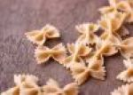
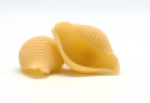
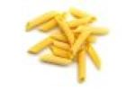

Pasta, which is made from only water, flour and egg, is such a diverse and multi-textured food that it can pair with anything.
The pasta noodle an old but simple dish that dates as far back as the 4th century (theorized by an old tomb that showed pasta).
Despite the common perception that Italy invented noodles or made them popular, historical evidence points that China was
the origin of noodles.
To this day we have invented and created over 400 pasta shapes!
| Pasta Image | Pasta Shape | Common Sauce Paring |
|---|---|---|
|  | Bow tie | butter/oil/cheese |
|  | Jumbo Shells | Creams/cheeses |
|  | Penne | meats/tomatoes |
Pasta has come along way in history,so much so that we are able to adapt the recipie to suit our beliefs and prefrences.
People have discovered different wheats for their pasta: whole wheat, rice flour, corn flour, and chickpeas. As well as
different vegan alternatives for eggs such as: pumpkin, semolina, oil, and corn starch. Instead of only a select few recipies
there are thousands different and original recipies that taste totally different. Pasta has become a cheap and simple meal for everyone.